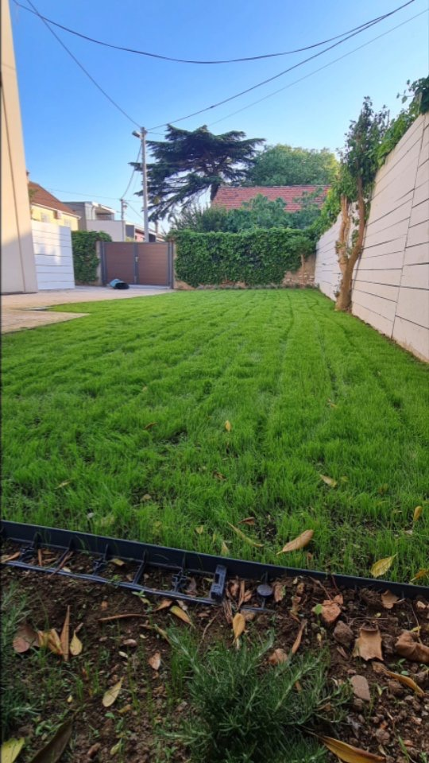
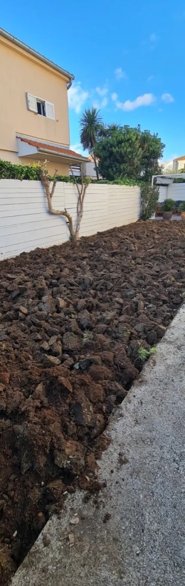
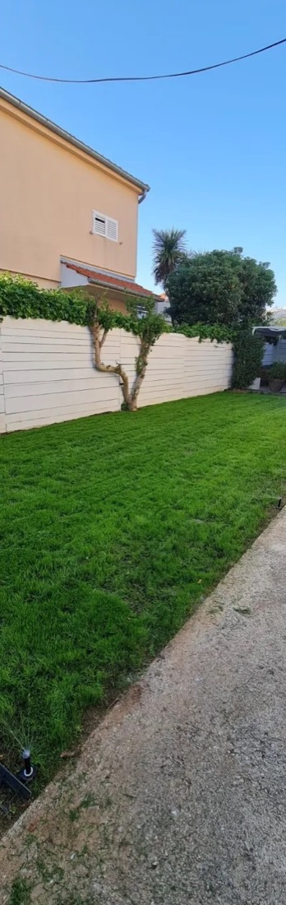
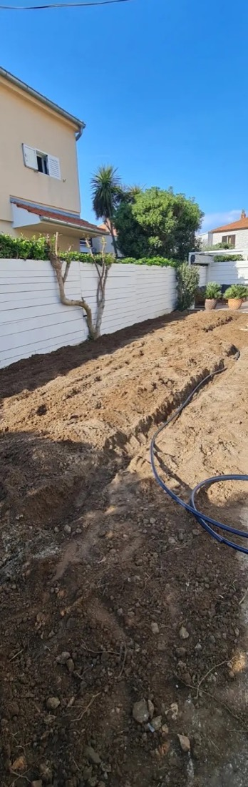

1
Priprema tla
Stara površina se prekopa i pripremi za novi travnjak.
Green Team održava i sadi različite vrtove, radi nove travnjake te ugrađuje i servisira RainBird sustave navodnjavanja. Za izvanredna održavanja imamo uslugu brzog dolaska.

Jednokratno uređenje ili redovito održavanje – za dvorišta, okućnice i kuće za odmor u Zadru.
Redovita briga o zelenim površinama ili jednokratno sređivanje zapuštenog vrta.
Više 02Košnja je naš redoviti posao – jednom ili po dogovorenom rasporedu.
Više 03Sadnja i uređenje okućnice i dvorišta, a po želji i planiranje s krajobraznim arhitektima.
Više 04Od pripreme tla i cijevi za navodnjavanje do gotovog, zelenog travnjaka.
Više 05Ugradnja i servis sustava, podzemno navodnjavanje prskalicama.
Više 06Kad nešto ne može čekati, imamo uslugu brzog dolaska.
Više

PrijePoslijePovucite crtu na fotografiji. Lijevo je tlo pripremljeno za sadnju, desno gotov travnjak – jedan od radova koje je Green Team objavio na Instagramu.
Izvor: objava „Stvaranje novog travnjaka kroz nekoliko faza”, @green.team.zadar, 12. 4. 2024.
Stara površina se prekopa i pripremi za novi travnjak.

Tlo se poravna, a cijevi sustava navodnjavanja polažu se prije travnjaka.
Novi travnjak, spreman za redovitu košnju i održavanje.
Održavanje zelenih površina i sustava navodnjavanja oko naše kuće za odmor odrađuju s puno pažnje, odgovornosti i ljubavi prema poslu. Okućnica je uvijek uredna, njegovana i lijepa.
Profesionalno, na vrijeme i za realne novce, preporučam svima!
Zadovoljni smo uslugama, vrt je odlično uređen.
Držali su se rokova, stigli i završili kad su rekli, bez odugovlačenja.
Dobro organizirani i stručni team! Jako brzo i temeljito!
Za sve ostalo: 092 101 0469 ili poruka na Instagramu.
„Javite nam se u bilo koje vrijeme.”Opis profila @green.team.zadar